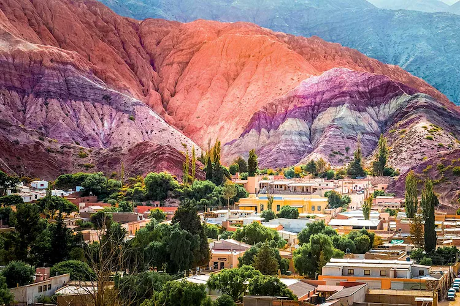
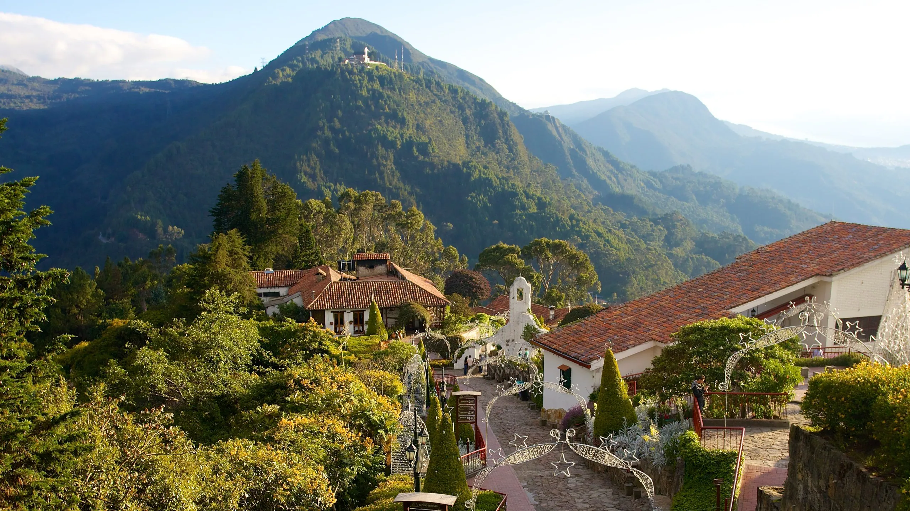

Che Guevara entreprit ce périple à bord de sa moto Norton 500 cm³, surnommée « La Poderosa II ». Symbole de liberté et de jeunesse, elle tomba en panne avant la fin du voyage, obligeant les deux compagnons à continuer à pied, en stop ou en radeau.
À bord de sa célèbre moto "La Poderosa", Che Guevara a parcouru près de 8 000 km à travers l’Amérique du Sud en 1952, aux côtés de son ami Alberto Granado. Ce voyage initiatique l'a profondément marqué, éveillant en lui une conscience humaniste face à la pauvreté et aux injustices sociales rencontrées sur sa route.
Il traversa des paysages spectaculaires, des villes coloniales et des zones rurales reculées, allant à la rencontre des populations locales, des ouvriers, des mineurs et des paysans. C'est au contact de ces réalités qu’il rédigea son journal de bord, plus tard publié sous le titre « Carnets de voyage ».
Che Guevara entreprit ce périple à bord de sa moto Norton 500 cm³, surnommée « La Poderosa II ». Symbole de liberté et de jeunesse, elle tomba en panne avant la fin du voyage, obligeant les deux compagnons à continuer à pied, en stop ou en radeau.
En Argentine, son pays natal, Che visita des hôpitaux et des villages où il découvrit la réalité de la vie dans les zones rurales. Il fut particulièrement marqué par la situation des lépreux dans les centres médicaux, notamment celui de San Pablo au Pérou.
Au Pérou, ils explorèrent la région andine et visitèrent le site emblématique du Machu Picchu. Cette immersion dans les cultures indigènes du continent renforça leur admiration pour l’histoire précolombienne et leur curiosité pour les peuples oubliés.
En Colombie et au Venezuela, Che Guevara découvrit les tensions politiques et les espoirs d’un changement dans un contexte de pauvreté urbaine. Il rencontra des intellectuels, des ouvriers et des étudiants, ce qui alimenta ses réflexions personnelles sur le rôle de la médecine et de la justice.
Ses notes et souvenirs de ce périple seront compilés sous le nom « Carnets de voyage ». Publiés après sa mort, ils offrent un regard intime et sincère sur ses pensées, son humour, ses doutes et les moments forts de cette aventure humaine.
Cette carte illustre le trajet emprunté par Che Guevara et Alberto Granado lors de leur voyage en 1952. Partant de Buenos Aires, ils traversèrent l'Argentine, le Chili, le Pérou, la Colombie, la Bolivie et finirent au Venezuela. Chaque étape fut l’occasion de découvertes culturelles et humaines marquantes.